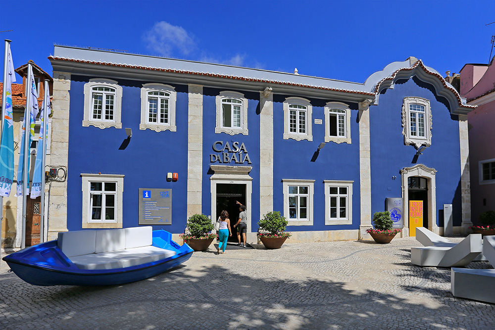
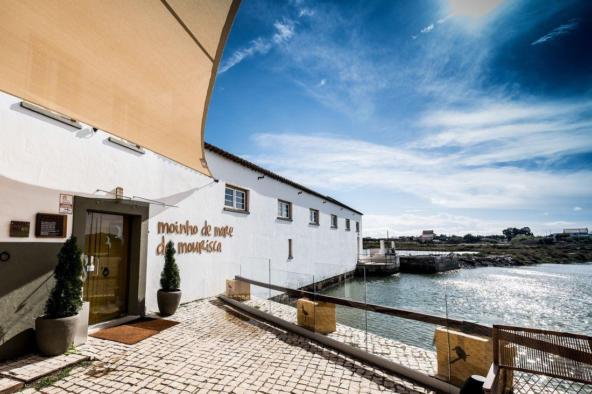
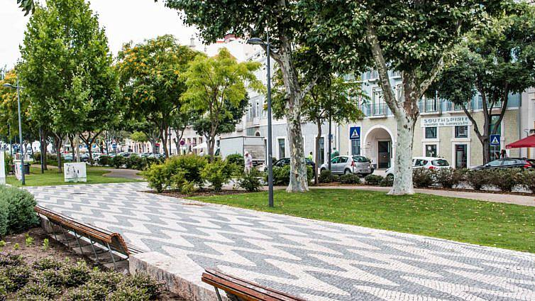
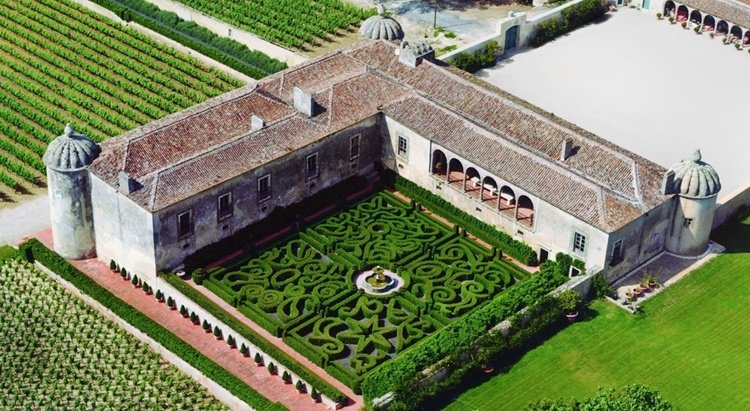
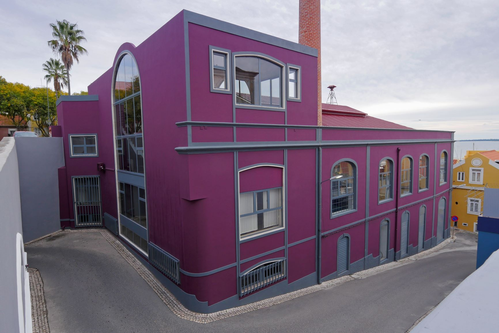
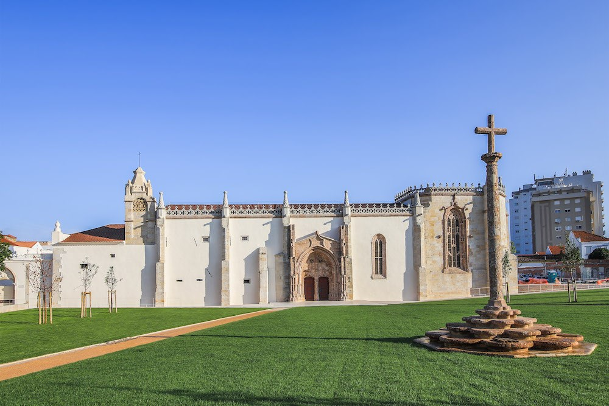

| Casa da Baía |
Moinho de Maré da Mourisca |
Avenida Luísa Todi |
|
 |
 |
 |
| A "Casa da Baía – Centro de Promoção Turística”, é um autêntico cartão de visita da região de Setúbal. |
O Moinho de Maré da Mourisca é um dos quatro moinhos de maré conhecidos no Estuário do Sado. |
A Avenida Luisa Todi, é a avenida mais importante de Setúbal. O seu nome celebra a artista cantora Luisa Todi. |
| Palácio e Quinta da Bacalhoa |
Museu do Trabalho Michel Giacometti |
Convento de Jesus de Setúbal |
|
 |
 |
 |
| A Quinta da Bacalhoa é uma antiga propriedade da Casa Real Portuguesa. |
O Museu do Trabalho Michel Giacometti abriu as portas ao público em 1995. |
A Igreja do antigo Mosteiro de Jesus ou Convento de Jesus de Setúbal é uma igreja de estilo gótico situada em Setúbal. |